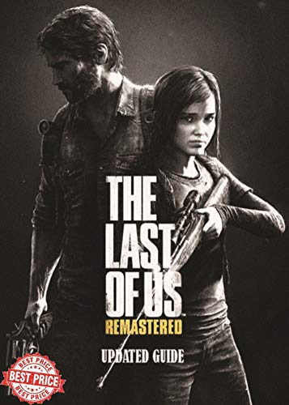

The Last of Us Remastered
The Last of Us Remastered
Details
|  | |
| Playtime | Not Played |
| Last Activity | Never |
| Added | 4/12/2022 23:15:57 |
| Modified | 8/17/2025 17:34:56 |
| Completion Status | #Want to Play |
| Library | PlayStation |
| Source | PlayStation |
| Platform | Sony PlayStation 4 |
| Release Date | 7/29/2014 |
| Community Score | 94 |
| Critic Score | 97 |
| User Score | |
| Genre | Shooter |
| Developer | Naughty Dog |
| Publisher | Sony Computer Entertainment |
| Feature | Multiplayer Single Player |
| Links | Official Website Wikipedia Twitch Wikia |
| Tag | Action Action-Adventure Adventure Atmospheric Cinematic Drama Emotional Horror Post-apocalyptic Remake Shooter Singleplayer Soundtrack Story Rich Survival Survival Horror Third Person Third-Person Shooter Thriller Zombies |
Description
Experience the emotional storytelling and unforgettable characters in The Last of Us™, winner of over 200 Game of the Year awards.
In a ravaged civilization, where infected and hardened survivors run rampant, Joel, a weary protagonist, is hired to smuggle 14-year-old Ellie out of a military quarantine zone. However, what starts as a small job soon transforms into a brutal cross-country journey.
Includes the complete The Last of Us single-player story and celebrated prequel chapter, Left Behind, which explores the events that changed the lives of Ellie and her best friend Riley forever.
Built for PC
The Last of Us Part I PC release brings with it plenty of PC features to bring Joel and Ellie’s tense and unforgettable journey to life. This version of The Last of Us Part I is optimized for PC with PC-centric quality-of-life enhancements. Part I will feature AMD FSR 2.2 support*, Nvidia DLSS Super Resolution support*, VSync and frame rate cap options, and a host of features designed specifically for PC, including adjustable Texture Quality, Shadows, Reflections, Ambient Occlusion, and more.
Through the experiences of Joel and Ellie, PC players can fully immerse themselves in beautiful yet haunting environments in stunning detail with true 4K resolutions**. From the harsh, oppressive streets of the Boston QZ to the overgrown and abandoned homes of Bill’s Town to so much more, embark on a beautiful journey across the United States of America with Ultra-Wide Monitor Support for both 21:9 Ultrawide and 32:9 Super Ultrawide aspect ratios.
Experience all these locations, stealthily sneaking through abandoned homes and cities (and picking their drawers and cabinets clean looking for supplies) or engage in tense, captivating action with 3D audio support to better hear the rustle of leaves, the crack of glass, or the footfalls of enemies trying to ambush you***.
AMD Fidelity FX Super Resolution 2
Supercharge your framerates and fight for survival as Joel and Ellie with next-level temporal upscaling technology from AMD. FSR 2 uses cutting-edge algorithms to boost your framerates and deliver high-quality, high-resolution game experiences in The Last of Us Part I across a wide range of compatible graphics cards.
Peripheral Support
The Last of Us Part I on PC features DualSense support through a wired connection so players can feel the impact of battle, the rumble of a tank rolling by, and so much more through haptic feedback and dynamic triggers. With support for the DualShock 4 controller, a wide range of other gamepads, and keyboard and mouse, players can adjust their playstyle to suit their preferences. The PC release includes a number of new control customization options including full control remapping, primary and secondary bindings for keyboard and mouse control, an adaptive mode that allows players to combine keyboard and controller inputs, and more. Part I’s PC launch will also include The Last of Us Part I’s suite of accessibility features so that players can adjust the experience to suit their needs and preferences.

 * Compatible PC and graphics card required for enhanced graphics.
* Compatible PC and graphics card required for enhanced graphics.
** Compatible PC, graphics card, and 4K display device required.
*** 3D Audio requires stereo headphones or compatible speakers.